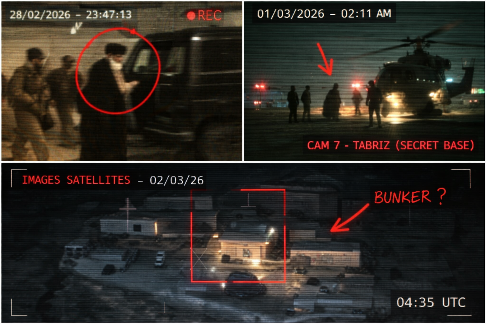

TÉHÉRAN - Selon plusieurs sources anonymes proches du pouvoir iranien, la mort du chef suprême annoncée récemment serait en réalité une mise en scène organisée par le gouvernement.
Un ancien officier des Gardiens de la révolution, qui a accepté de parler sous couvert d'anonymat, affirme que le dirigeant aurait été transporté en hélicoptère dans une base militaire secrète près de la ville de Tabriz quelques heures avant l'annonce officielle de son décès.

Plusieurs éléments alimentent les doutes : une vidéo floue publiée sur les réseaux sociaux montrerait une silhouette ressemblant au leader iranien entrant dans un convoi militaire deux jours après l'annonce.
Selon le docteur Reza Farhadi, un médecin iranien vivant en exil, le corps présenté lors des funérailles ne correspondrait pas à la taille réelle du dirigeant.